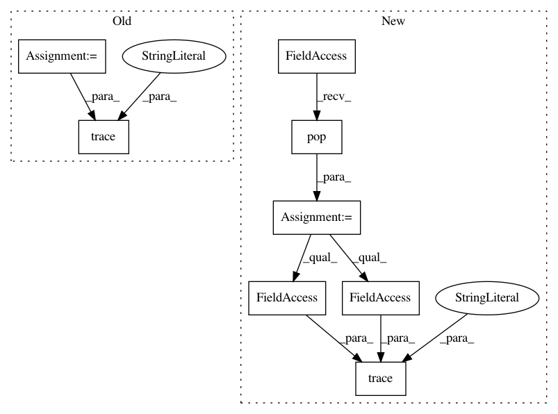

46309771bbddd202267030f42a6f067294f7a626,plugins/extract/detect/_base.py,Detector,finalize,#Detector#Any#,128
Before Change
batch = self._dict_lists_to_list_dicts(batch)
for item in batch:
logger.trace("final output: %s", {k: v.shape if isinstance(v, np.ndarray) else v
for k, v in item.items()})
yield item
@staticmethod
def to_detected_face(left, top, right, bottom):
After Change
batch = self._dict_lists_to_list_dicts(batch)
for item in batch:
output = self._extract_media.pop(item["filename"])
output.add_detected_faces(item["detected_faces"])
logger.trace("final output: (filename: "%s", image shape: %s, detected_faces: %s, "
"item: %s", output.filename, output.image_shape, output.detected_faces,
output)
yield output
@staticmethod
def to_detected_face(left, top, right, bottom):
In pattern: SUPERPATTERN
Frequency: 3
Non-data size: 8
Instances
Project Name: deepfakes/faceswap
Commit Name: 46309771bbddd202267030f42a6f067294f7a626
Time: 2019-11-28
Author: 36920800+torzdf@users.noreply.github.com
File Name: plugins/extract/detect/_base.py
Class Name: Detector
Method Name: finalize
Project Name: deepfakes/faceswap
Commit Name: 46309771bbddd202267030f42a6f067294f7a626
Time: 2019-11-28
Author: 36920800+torzdf@users.noreply.github.com
File Name: plugins/extract/mask/_base.py
Class Name: Masker
Method Name: finalize
Project Name: deepfakes/faceswap
Commit Name: 46309771bbddd202267030f42a6f067294f7a626
Time: 2019-11-28
Author: 36920800+torzdf@users.noreply.github.com
File Name: plugins/extract/align/_base.py
Class Name: Aligner
Method Name: finalize